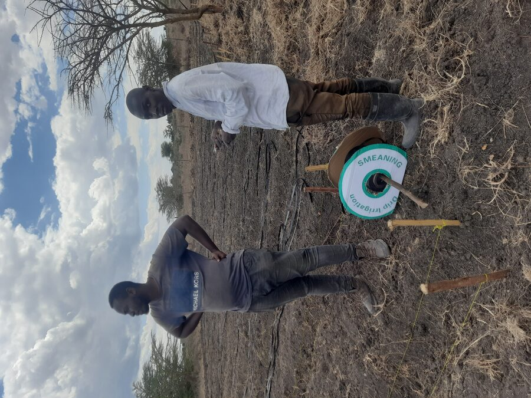
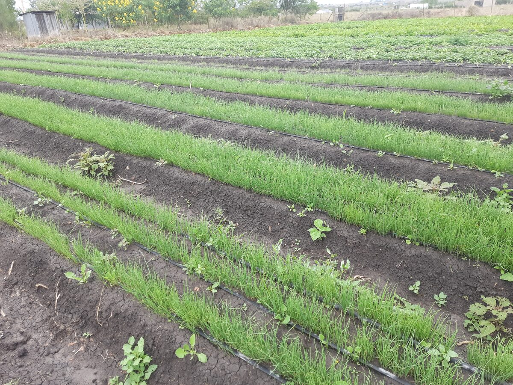
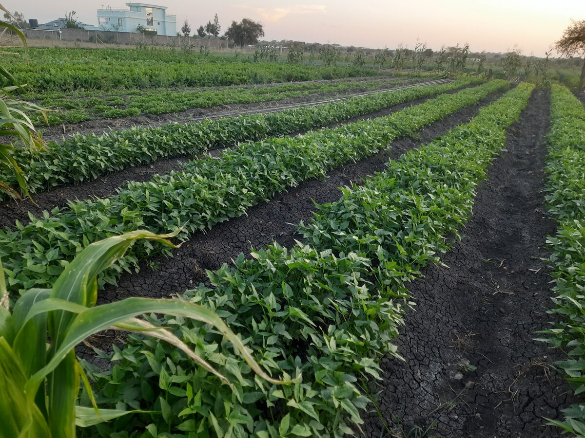
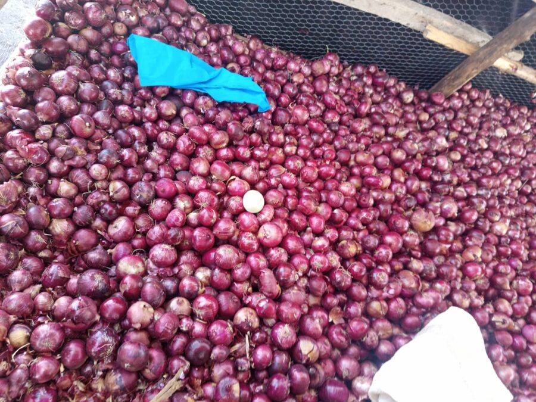
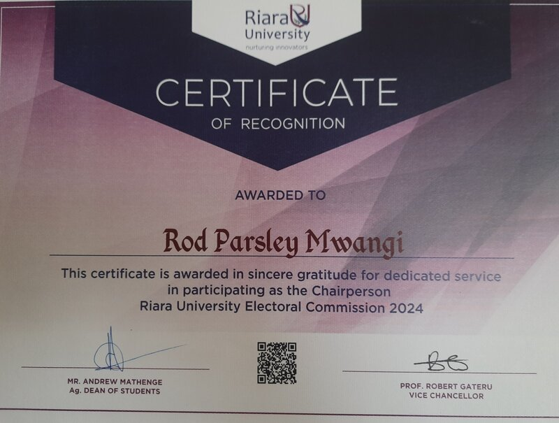

I work across government, UN agencies, and civil society on the evidence and systems that make inclusion real. I also run a farm. The two have more in common than you'd think.

I'm a Kenyan researcher and development practitioner with a background in Anthropology and International Relations, currently preparing for an MA in International Studies at the University of Wyoming. Over the past two years, I've contributed to Kenya's Beijing+30 Country Report, led field research for UN Women on blue economy value chains, helped 18 trade unions build governance frameworks from scratch, and started a commercial farm that produced 8.7 tonnes of onions in its first season. The common thread isn't a sector. It's a habit: I find the gap between how a system is supposed to work and how it actually works, and I build what's missing to close it.
Led field coordination and data collection for a Gender-Based Analysis Plus study across Kwale and Lamu counties. 175+ respondents, mixed-methods design, KOBO Toolbox. The study examines how blue economy value chains include and exclude women, youth, and persons with disabilities.
Contributed research and drafting to Kenya's national review of the Beijing Platform for Action, submitted to the UN for the 30th anniversary global review. Scripted and conducted interviews for a documentary on 30 years of gender reform.
Read the Country Report →Supported 18 Kenyan trade unions in developing Codes of Conduct and SEAH/Anti-Corruption policies from scratch under a global pilot. Drafted model clauses, ensured legal alignment, documented for replication across Sub-Saharan Africa.
See on LinkedIn →Providing research and analytical support for a UNIDO-commissioned gender assessment of the EELA Kenya programme, focused on energy-efficient appliance uptake, clean technology in the tea industry, and skills development.
Commercial vegetable operation under drip irrigation in semi-arid conditions. Harvested 8.7 tonnes of onions from 1.4 acres in the first season. Featured on Citizen TV's Kenya's Gold. The structural gaps I study professionally show up here as things I navigate every day.
Collaborated with a team on an AI chatbot using Google Gemini API for an MBA Social Good Challenge. The tool uses an 83-chunk knowledge base from six organizational HR documents, deployed on Vercel.
Building a progressive web app for farm operations: 290+ beds, crop tracking, sales, harvest logging, expense management. Offline-first with IndexedDB and Supabase backend.



Nairobi Kleve Model African Union, 2022 | Rhine-Waal University

Riara University, 2024 | Restructured electoral system, introduced digital voting
"I find myself among the masses you have wooed..."
A story of boarding the wrong matatu, told in Sheng, English, and everything in between.
"For I would rather be blessed by hatred divine, than to be cursed by indifference..."
Most of my career so far has been about one thing: taking systems that don't work for people and building what's missing to make them functional.
Sometimes that looks like research. For UN Women Kenya, I led field coordination and data collection for a GBA+ study across two coastal counties, generating evidence on how blue economy value chains include and exclude women, youth, and persons with disabilities. At the State Department for Gender, I contributed to Kenya's Beijing+30 Country Report, drafted technical submissions for CSW69, and scripted and conducted interviews for a documentary on Kenya's 30-year journey toward gender equality. I've also been providing analytical support for a UNIDO-commissioned gender assessment of energy efficiency in Kenya's tea sector.
Sometimes it looks like institutional reform. I helped 18 Kenyan trade unions build Codes of Conduct and SEAH policies from scratch under a Union-to-Union global pilot, drafting model clauses, ensuring legal alignment, and documenting the process for replication across Sub-Saharan Africa.
Sometimes it looks like agriculture. I run Parsley's Farm, a 2.6-acre commercial vegetable operation in Kajiado County where I harvested 8.7 tonnes of onions from 1.4 acres in my first season. Citizen TV featured the harvest on Kenya's Gold.
And sometimes it looks like something I didn't plan for: redesigning a survey instrument for agricultural workers, building a progressive web app for farm management, collaborating on an AI-powered HR tool for a university challenge. The gap was there, and the skill was learnable.
This Fall, I join the University of Wyoming for an MA in International Studies. The longer-term aim is to connect field-level evidence with policy design, whether through multilateral institutions, a research career, or building something of my own.
Open to conversations about research, policy, agriculture, or whatever falls between them. Currently based in Nairobi. Heading to Laramie, Wyoming this Fall.